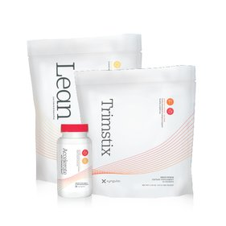

Ultimate features our award-winning product, Trimstix, our popular snack replacement Lean Vanilla and Chocolate, as well as Probiotix, a tasty and potent formula for gut health. Low-Carb/Keto meal plans are also included within the system to help accelerate weight loss results, and you’ll also have access to Xander, your very own virtual coach. Xander will provide daily tips and information, as well as remind you when to take your product.
Ignite includes products that offer head-to-toe nutritional support, boost metabolism, burn fat, and remove toxins that cause stress on your body and health. The system also comes with low-carb/keto meal plans to accelerate weight loss, and your very own virtual health coach, Xander. Xander will remind you when to take product, and provide you with valuable information and guidance.
This introductory system delivers an effective combination of five high-quality products that assist with specific weight-loss issues, two meal plan options that fit your tastes and preferences, and a virtual coach named Xander who delivers daily tips and reminders straight to your phone.
The Xyngular Trim Down Trio provides a complete basic system to follow for noticeable weight-loss results in just 30 days. This trio of top-selling products is designed to work together in curbing cravings and controlling hunger; and supporting all-day energy and an active, fat-burning metabolism.
